Hampton Court for junior classes

Hampton Court is a country palace of the English kings in the vicinity of London. It is located on the left bank of the River Thames, in the area of Richmond-upon-Thames, 18 km from the city center.
Now the palace has been turned into a museum
Architect
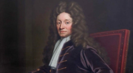
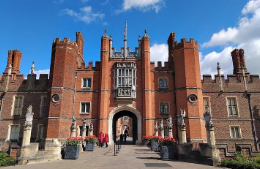
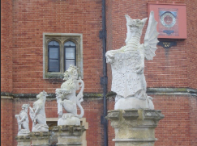
You can visit the royal kitchen: some of the rooms are used as museums, with replicas of food, while others feature a real kitchen where chefs in medieval attire prepare dishes from that era.
The palace is made of red brick, and its decor is made of white stone. The cornices, window openings, and the contours of the battlements are outlined with white stone, and the tops of the towers and the lacy window frames are decorated with white lace.
The western facade is bristling with the crenellations of the walls and gate towers: some of them are wide and octagonal, while others are slender and narrow, with crests on their tops.
A massive stone bridge leads to the palace gates, spanning the moat and adorned with stone heraldic sculptures of animals.
The Royal Beasts sculpture group was created during the reign of Henry Tudor and Queen Jane. The white stone animal figures stand out against the red brick background, highlighting the personal coats of arms of the owners..
Exhibits
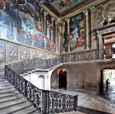
The museum has a collection of antiques and paintings by Mantegna, Raphael, Bruegel the Elder and others from the Royal Collection.
Events
Two traditional festivals are held annually at the palace:
Hampton Court Palace Festival - a historical festival dedicated to the Tudor era: concerts, performances, jousting tournaments.
Hampton Court Palace Flower Show - an annual July festival of flowers and landscape design: here you can see different gardening novelties, there are workshops on floriculture and floristry, there is a marketplace with seedlings and seedlings.
During the day, there are free themed workshops, for example, on medieval dancing or archery.
Hampton Court for senior classes
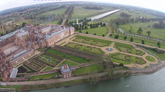
Hampton Court is a country palace of the English kings in the vicinity of London. It is located on the left bank of the River Thames, in the area of Richmond upon Thames, 18 km from the city center.
Architecture
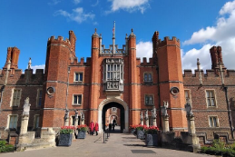
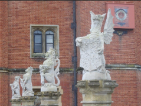
The palace is made of red brick, and its decor is made of white stone. The cornices, window openings, and the contours of the battlements are outlined with white stone, and the tops of the towers and the lacy window frames are decorated with white lace.
The western facade is bristling with the crenellations of the walls and gate towers: some of them are wide and octagonal, while others are slender and narrow, with crests on their tops.
A massive stone bridge leads to the palace gates, spanning the moat and adorned with stone heraldic sculptures of animals.
The Royal Beasts Sculpture Group was created during the reign of Henry Tudor and Queen Jane: the white stone animal figures stand out against the red brick background, highlighting the personal coats of arms of the owners.
Interior
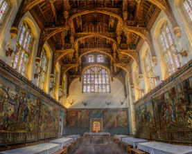
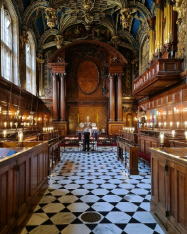
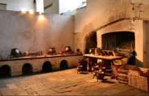
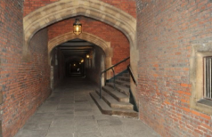
The Great Hall was built in 1532 to replace an older hall and served as a venue for feasts and lively dancing. The walls are adorned with Abraham's tapestries and the coat of arms of Anne Boleyn.
The Great Audience Chamber is the first of Henry VIII's state apartments and is connected to the Great Hall. The gilded ceilings feature Henry's royal coat of arms and the badge of his wife, Jane Seymour.
The Royal Chapel has a Tudor ceiling from the time of Henry VIII, which was renovated by Queen Anne in 1710.
The outbuildings include a huge wine and beer cellar with star-shaped Gothic ceilings, storerooms, a kitchen, and servants' quarters.
Park
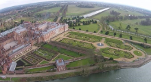
The Palace Garden is a classic example of a regular English garden from the Tudor era. It covers an area of 24 hectares.
Some features of the garden
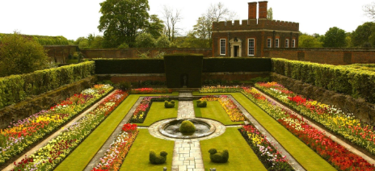
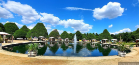
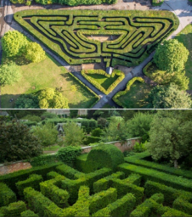
To the east of the palace, the main canal leaves, and three paired alleys scatter.
On the south side of the new buildings of the palace, there is a Secret Garden with round ponds and four decorative flower beds, made in the late 17th century.
In the depths of the Secret Garden, there are several fenced gardens: a garden with a lake and a decorative garden.
On the north side of the palace, there is a maze of trimmed shrubs, which was typical for gardens of that time.
The park's attraction is a maze of trimmed yews, which was added in 1702. This maze is described in "Three Men in a Boat, Not Including the Dog" by J. K. Jerome. The property includes a historic tennis court dating back to the time of Henry VIII.
Architect 2
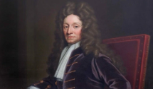
Christopher Wren.